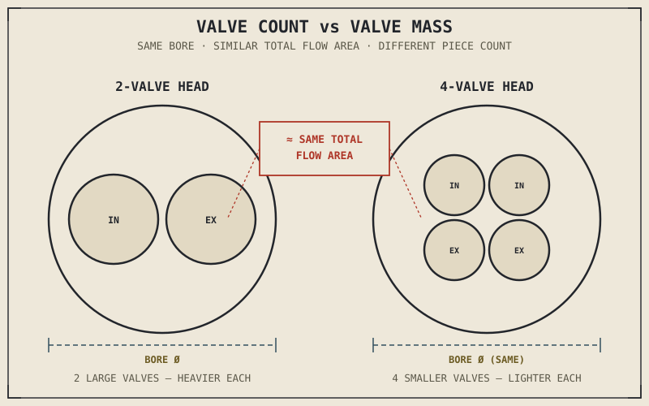

Every one of an engine's redline limits — that maximum safe RPM printed on the tachometer's red zone — is, more often than not, actually a limit imposed by a pair of small metal discs and the springs holding them shut. Not the crankshaft. Not the pistons. The valves, and specifically, how fast their springs can slam them closed again before the next cycle needs them open. This chapter is about the assembly those valves live in, and why something that sounds as simple as "a hole that opens and closes" turns out to define how far an engine can safely rev.
Chapter 2.5 followed combustion pressure downward, through the piston and into the crankshaft. This chapter turns to what sits above the piston: the cylinder head, the sealed chamber where combustion actually happens, and the valves that control everything entering and leaving that chamber.
The Cylinder Head Is Where Combustion Actually Lives
The cylinder head bolts onto the top of the cylinder and, together with the piston crown at TDC, forms the sealed combustion chamber — the space Chapter 2.2 described the mixture being compressed into and Chapter 2.4 described a flame front spreading across. The spark plug sits in this chamber, and so do the valves: openings that must seal absolutely tight during compression and combustion, holding in pressures far beyond normal atmospheric levels, and then open completely out of the way, twice every cycle, to let gas flow freely in and out.
That's a genuinely demanding dual requirement, and it's worth sitting with why. A valve has to behave like a solid wall one instant and an open doorway the next, switching between those two states thousands of times a minute, without ever leaking pressure while sealed or restricting flow while open. The mechanism that pulls this off is simpler than it sounds: a poppet valve, shaped roughly like a mushroom, with its wide head sealing against a matching valve seat machined into the cylinder head when closed, and lifting straight up off that seat when a camshaft lobe pushes it open — camshaft timing being the whole subject of Chapter 2.7.
Why Most Modern Engines Use Four Valves per Cylinder, Not Two
Chapter 2.3 already established that how much air actually gets into the cylinder — volumetric efficiency — depends heavily on how easily air can flow through the intake valve during the narrow window it's open. A single large valve seems like the obvious way to maximize that flow area, but a single valve of a given total flow area is also a single, comparatively heavy metal disc, and everything about its motion has to be actively controlled and stopped by a spring, over and over, at high speed. Split that same total opening into two smaller valves instead, and you get roughly the same total flow area with each individual valve weighing much less — meaning each one is easier to accelerate open and, just as importantly, easier to stop reliably when it needs to close.
This is why most modern engines use four valves per cylinder — two intake, two exhaust — rather than the two-valve layouts common on older or more traditionally styled designs. It isn't that four valves are unconditionally superior; a well-designed two-valve head, with its larger, heavier valves and correspondingly gentler cam profiles, often produces very strong low-RPM torque and a simpler, more durable valve train, which is exactly why the layout persists on engines built around low-end pull rather than a high-revving character. Four valves generally trade some of that low-RPM simplicity for a higher potential RPM ceiling and stronger high-RPM breathing. Neither is the correct answer in the abstract — only in relation to what the rest of the engine, and the bike it's built for, is trying to do.
Valve count isn't a scoreboard. It's a trade between how much total flow area you want and how light each individual moving part needs to be to survive being flung open and slammed shut thousands of times a minute.

A two-valve cylinder head and a four-valve cylinder head shown side by side over the same bore diameter, with total flow area compared and individual valve size and mass labeled on each.
Chamber Shape and the Flame Front, Revisited
Chapter 2.4 explained that combustion is a flame front spreading progressively from the spark plug outward, and that the time this takes is the entire reason ignition timing has to lead TDC. The shape of the combustion chamber this flame front has to cross is not incidental to that story — a compact chamber, with the spark plug positioned centrally and no unnecessarily long distance for the flame to travel to reach the chamber's far edges, lets combustion complete faster and more predictably at a given ignition timing than a sprawling, irregularly shaped chamber would.
A more compact chamber also tends to leave less unburned end-gas sitting far from the spark plug for long, which directly reduces the conditions that produce the knock Chapter 2.4 described — one of several reasons cylinder head design and compression ratio, the subject of Chapter 2.9, are so closely linked in practice rather than being two unrelated numbers on a spec sheet.
Valve Float: Why Redline Isn't Just About Heat
It's easy to assume an engine's redline exists purely to protect against heat, stress, or the piston's own increasingly violent acceleration described in Chapter 2.5 — and those things do matter. But there's a valve-specific limit that often arrives first: valve float. A valve spring's job is to close the valve fast enough to follow the camshaft lobe's profile exactly, at every RPM the engine will reach. Push RPM high enough, and the spring can no longer close the valve quickly enough to keep pace — the valve "floats," momentarily losing contact with the cam lobe and continuing to move on its own momentum instead of following the cam's intended profile.
A floating valve can stay open longer than intended, disrupting the carefully timed choreography Chapter 2.2 described, and in a worst case, can even collide with a rising piston if the timing drifts far enough. This is a hard mechanical ceiling, independent of how much heat or fuel the engine could otherwise tolerate, and it's a large part of why racing engines invest heavily in lighter valves, stiffer springs, or alternative valve-closing mechanisms — all aimed at raising exactly this ceiling.
A Common Misconception, Cleared Up Early
It's tempting to treat "more valves" or "bigger valves" the same way Chapter 2.3 warned against treating a bigger throttle body: as an unambiguous upgrade. The valve float problem above shows exactly why that instinct fails here too. Bigger, heavier valves are harder for a spring to control at high RPM, lowering the point at which valve float sets in, even though they may flow more air at any given moment they're open. Multiple smaller valves reduce that per-valve mass while preserving total flow area, which is precisely the trade Chapter 2.5's flywheel discussion already previewed in a different form: lighter moving parts respond and rev more freely, at some cost elsewhere in the design.
Where This Leads
This chapter described what the valves are and why their size and number matter, but deliberately left out exactly when they open and close relative to the piston's position — the camshaft's job. Chapter 2.7 picks up there, covering camshaft lobe design, valve timing, and the overlap between intake and exhaust valves that Chapter 2.2 mentioned only in passing.
Key Concepts to Remember
- The cylinder head, together with the piston crown at TDC, forms the sealed combustion chamber, and its valves must alternate between sealing pressure completely and opening fully, thousands of times a minute.
- Splitting a given total valve flow area across multiple smaller valves reduces the mass each individual valve's spring has to control, which is why most modern engines use four valves per cylinder rather than two.
- Two-valve heads trade some high-RPM breathing potential for simpler, heavier valves that often suit strong low-RPM torque and durability better.
- Combustion chamber shape affects how quickly and predictably the flame front described in Chapter 2.4 can cross the chamber, directly influencing both combustion efficiency and knock resistance.
- Valve float — a spring's inability to close the valve fast enough to keep pace with the cam profile — is often the true mechanical limit behind an engine's redline, independent of heat or piston stress.
Cross-References
| ← Ch. 2.4 | Introduced the flame front and ignition timing; this chapter explains how combustion chamber shape directly affects how that flame front behaves. |
| ← Ch. 2.3 | Warned against assuming a larger intake is automatically better; this chapter applies the identical trade-off to valve size and count. |
| ← Ch. 2.5 | Introduced the piston's violent, repeated acceleration; this chapter introduces the valve train's own version of that same high-speed mechanical stress. |
| → Ch. 2.7 | Camshaft design and valve timing — exactly when the valves introduced here actually open and close. |
| → Ch. 2.9 | Compression ratio in full, closely tied to the combustion chamber shape discussed in this chapter. |